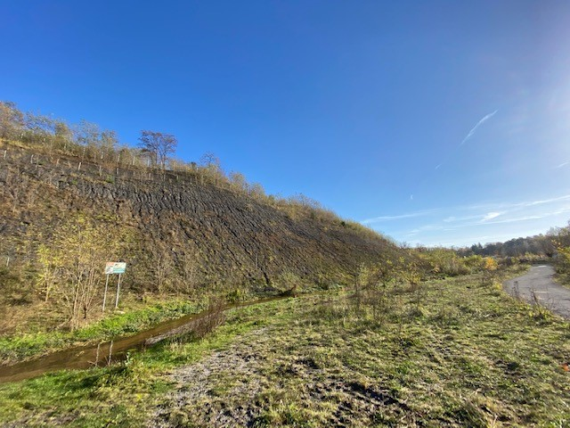
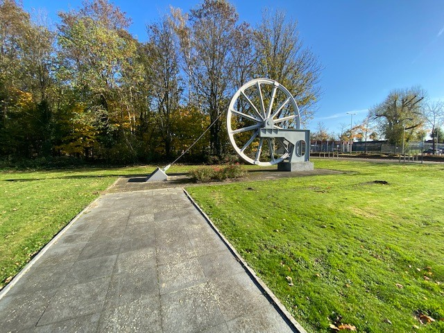

☰
Mijnverleden Brunssum
Brunssum was een dorp met meerdere mijnen.
Een van de mijnen in Brunssum heet de Staatsmijn Hendrick en stond in de Brunssumse wijk Rumpen.
De andere Staatmijn in Brunssum heet de Staatmijn Emma deze stond tussen Treebeek en Heerlen

overblijfselen van de Mijnen
Berg van Mijnsteen
Er zijn nog meerdere overblijfselen van de mijnen in Brunssum, waaronder een berg van mijnsteen.

Schachtwiel
In Brunssum staat een Schachtwiel, deze is gebruikt om in de mijnen het steenkool naar boven te brengen.

Kaart Brunssum 1245
Dit is een kaart van Brunssum uit het jaar 1245.
Op deze kaart kunt u zien hoe Brunssum eruit zag en waar de plaatsen lagen in Brunssum.